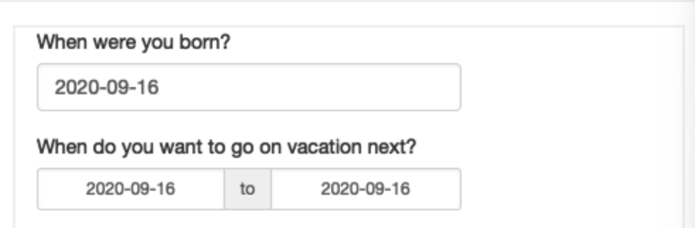
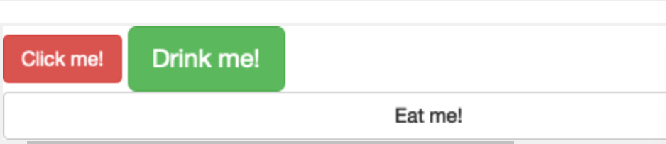

sliderInput(inputId = "min", label = "Limit (minimum)", value = 50, min = 0, max = 100)Mastering Shiny: Ch2 - Basic UI
Basic UI
Previously
Shiny encourages separation of the code that generates your user interface (the front end) from the code that drives your app’s behaviour (the back end).
Chapter goal
focus on front end
inputs and outputs built into Shiny
many types of data and display many types of R output.
shiny extension packages - shinyWidgets, colorpicker, and sorttable
Comprehensive list of extensions at https://github.com/nanxstats/awesome-shiny-extensions, maintained by Nan Xiao.
Inputs
Common structure - input functions: e.g.
inputId = unique identifier used to connect the front end with the back end
label = second parameter, used to create a human-readable label for the control.
value = third parameter, set the default value for input control
Note: When creating an input, I recommend supplying the inputId and label arguments by position, and all other arguments by name:
sliderInput("min", "Limit (minimum)", value = 50, min = 0, max = 100)Free text
- small amounts of text using textInput(),
- passwords with passwordInput(), and
- paragraphs of text with textAreaInput().
ui <- fluidPage(
textInput("name", "What's your name?"),
passwordInput("password", "What's your password?"),
textAreaInput("story",
"Tell me about yourself",
rows = 3)
)Numeric inputs - numeric values
- constrained text box with numericInput()
- slider with sliderInput(), a length-2 numeric vector for the default value of sliderInput() gives a “range” slider with two ends
ui <- fluidPage(
numericInput("num", "Number one", value = 0, min = 0, max = 100),
sliderInput("num2", "Number two", value = 50, min = 0, max = 100),
sliderInput("rng", "Range", value = c(10, 20), min = 0, max = 100)
)Recommendation
Only use sliders for small ranges, or cases where the precise value is not so important. Attempting to precisely select a number on a small slider is an exercise in frustration!
Sliders are extremely customisable and there are many ways to tweak their appearance. See ?sliderInput and https://shiny.rstudio.com/articles/sliders.html for more details.
Dates - single day with dateInput() or a range of two days with dateRangeInput().
- provide a convenient calendar picker, and additional arguments like
datesdisabledanddaysofweekdisabledallow you to restrict the set of valid inputs.
ui <- fluidPage(
dateInput("dob", "When were you born?"),
dateRangeInput("holiday", "When do you want to go on vacation next?")
)
Note: Date format, language, and the day on which the week starts defaults to US standards. If you are creating an app with an international audience, set format, language, and weekstart so that the dates are natural to your users.
Limited choices
two different approaches - selectInput() and radioButtons().
animals <- c(“dog”, “cat”, “mouse”, “bird”, “other”, “I hate animals”)
ui <- fluidPage(
selectInput(“state”, “What’s your favourite state?”, state.name),
radioButtons(“animal”, “What’s your favourite animal?”, animals)
)
Radio buttons
show all possible options, making them suitable for short lists
display options other than plain text via the arguments:
choiceNames(determines what is shown to the user)choiceValues(determines what is returned in your server function)
ui <- fluidPage(
radioButtons("rb", "Choose one:",
choiceNames = list(
icon("angry"),
icon("smile"),
icon("sad-tear")
),
choiceValues = list("angry", "happy", "sad")
)
)SelectInputs
create dropdowns occupying more space thereby suitable for longer options
set
multiple = TRUEto allow the user to select multiple elements
ui <- fluidPage(
selectInput( "state", "What's your favourite state?", state.name, multiple = TRUE )
)Note:
For a very large set of possible options, use “server-side” selectInput() i.e. selectizeInput() so that the complete set of possible options are not embedded in the UI (which can make it slow to load), but instead sent as needed by the server.
Checkbox/CheckboxGroupInput
checkbox() - a single checkbox for a single yes/no question
ui <- fluidPage(
checkboxInput("cleanup", "Clean up?", value = TRUE),
checkboxInput("shutdown", "Shutdown?")
)checkboxGroupInput() - select multiple values
ui <- fluidPage(
checkboxGroupInput("animal", "What animals do you like?", animals)
)File uploads - allow users to upload a file, requires special handling on the server side.
ui <- fluidPage(
fileInput("upload", NULL)
)Action buttons - actionButton(),actionLink() - let the user perform an action - naturally paired with observeEvent() or eventReactive() in server function
ui <- fluidPage(
actionButton("click", "Click me!"),
actionButton("drink", "Drink me!", icon = icon("cocktail"))
)class arguments: sets the class attribute of the underlying HTML, which affects how the element is styled.
So, using the class argument, we can:
- customise the appearance of the buttons i.e. “btn-primary”, “btn-success”, “btn-info”, “btn-warning”, or “btn-danger”.
- change the button size with “btn-lg”, “btn-sm”, “btn-xs”.
- make buttons span the entire width of the element they are embedded within using “btn-block”
ui <- fluidPage(
fluidRow(
actionButton("click", "Click me!", class = "btn-danger"),
actionButton("drink", "Drink me!", class = "btn-lg btn-success")
),
fluidRow(
actionButton("eat", "Eat me!", class = "btn-block")
)
)
Outputs
- takes a unique ID as their first argument i.e. ‘outputID’
- access in the server function as follows: output$outputID
- each output function on the front end is coupled with a render function in the back end (server side)
- 3 main types: text, tables, and plots
Text textOutput(): display regular text verbatimTextOutput(): fixed code and console output
ui <- fluidPage(
textOutput("text"),
verbatimTextOutput("code")
)
server <- function(input, output, session) {
# single line code i.e {} not required within render function
output$text <- renderText("Hello friend!")
output$print <- renderPrint("Hello friend!")
# {} within render function for multiple lines of code or optional for single code
# output$text <- renderText({
# "Hello friend!"
# })
# output$code <- renderPrint({
# "Hello friend!"
# })
}Note that there are two render functions which behave slightly differently:
renderText()combines the result into a single string, and is usually paired withtextOutput()renderPrint()prints the result, as if you were in an R console, and is usually paired withverbatimTextOutput().Tables
2 options for displaying data frames in tables:
tableOutput()andrenderTable(): render a static table of data, showing all the data at once; most useful for small, fixed summariesdataTableOutput()andrenderDataTable()render a dynamic table, showing a fixed number of rows along with controls to change which rows are visible.
ui <- fluidPage(
tableOutput("static"),
dataTableOutput("dynamic")
)
server <- function(input, output, session) {
output$static <- renderTable(head(mtcars))
output$dynamic <- renderDataTable(mtcars, options = list(pageLength = 5))
}Plots
display any type of R graphic (base, ggplot2, or otherwise) with
plotOutput()andrenderPlot()override the default values for height and width of plots with the
heightandwidtharguments; set res=96
ui <- fluidPage(
plotOutput("plot", width = "400px")
)
server <- function(input, output, session) {
output$plot <- renderPlot(plot(1:5), res = 96)
}Plots are special because they are outputs that can also act as inputs. plotOutput() has a number of arguments like click, dblclick, and hover. If you pass these a string, like click = "plot_click", they’ll create a reactive input (input$plot_click) that you can use to handle user interaction on the plot, e.g. clicking on the plot. We’ll come back to interactive plots in Shiny in Chapter 7.
Downloads
You can let the user download a file with downloadButton() or downloadLink(). These require new techniques in the server function, so we’ll come back to that in Chapter 9.